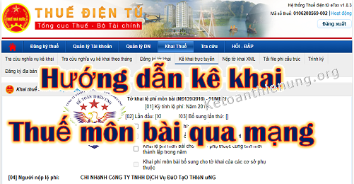
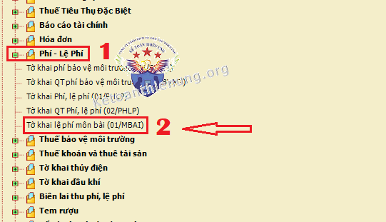
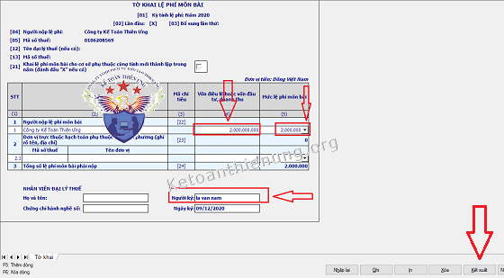
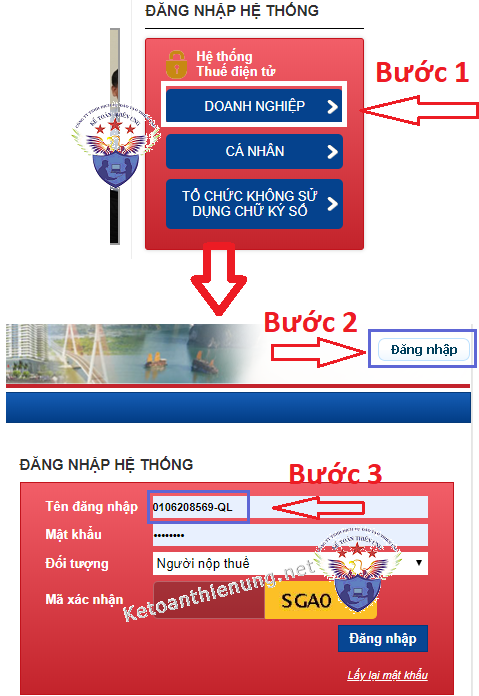
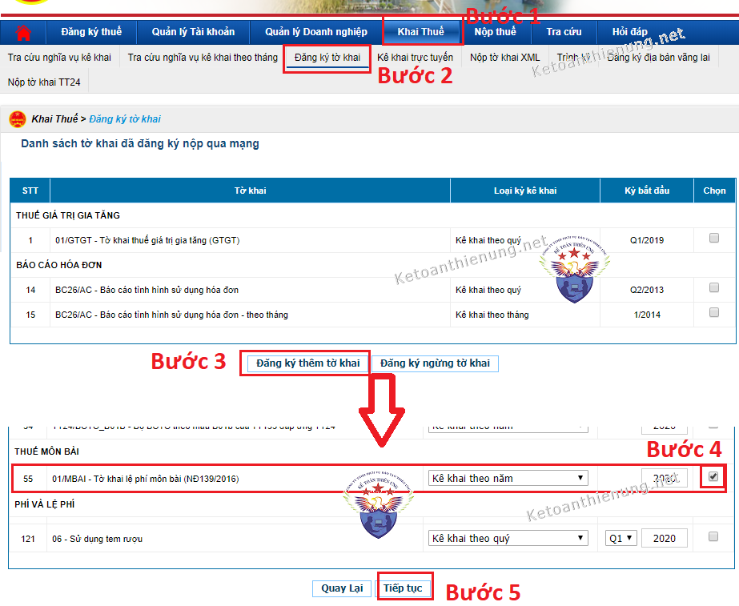
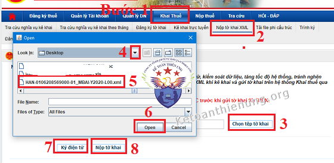
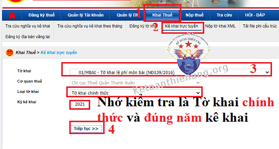
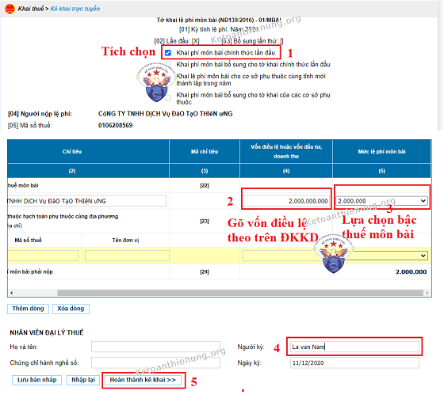

Hướng dẫn kê khai lệ phí môn bài chi tiết các trường hợp: Cách kê khai thuế môn bài qua mạng điện tử và trên HTKK; Cách kê khai thuế môn bài lần đầu theo quy định hiện hành.
Trình tự các bước kê khai nộp thuế môn bài như sau:
- Xác định mức thuế môn bài phải nộp.
- Nộp Tờ khai thuế môn bài -> Lựa chọn cách kê khai thuế môn bài, có 3 cách: Nộp trực tiếp; Kê khai trên phần mềm HTKK rồi nộp qua mạng; Kê khai trực tuyến trên trang thuedientu.
- Nộp Tiền thuế môn bài -> Lập giấy nộp tiền thuế môn bài, nộp tiền thuế môn bài.
Lưu ý: Bài viết này Kế toán Diệu Tâm hướng dẫn kê khai thuế môn bài cho Doanh nghiệp, tổ chức nhé.

Chi tiết các bước cụ thể như sau:
| Vốn điều lệ hoặc vốn đầu tư | Mức thuế môn bài cả năm | Bậc | Mã Tiều mục |
| Trên 10 tỷ đồng | 3.000.000 đồng/năm | Bậc 1 | 2862 |
| Từ 10 tỷ đồng trở xuống | 2.000.000 đồng/năm | Bậc 2 | 2863 |
| Chi nhánh, văn phòng đại diện, địa điểm kinh doanh, đơn vị sự nghiệp, tổ chức kinh tế khác | 1.000.000 đồng/năm | Bậc 3 | 2864 |
----------------------------------------------------------------------------
2. Nộp tờ khai thuế môn bài:
- Có 3 cách cụ thể như sau: Nộp trực tiếp; Kê khai trên phần mềm HTKK rồi nộp qua mạng; Kê khai trực tuyến trên trang thuedientu.
Chú ý: Tùy từng chi cục thuế, có nơi sẽ nhận bản cứng, có nơi sẽ nhận qua mạng (Hiện tại chủ yếu là qua mạng nhé). Chi tiết các bạn liên hệ với Cơ quan thuế quản lý DN để hỏi xem ở đó họ nhận theo phương thức nào nhé.
- Các bạn tải Tờ khai Lệ phí môn bài về tại đây: Tờ khai lệ phí môn bài
Xem thêm: Cách lập Tờ khai lệ phí môn bài
- Các bạn tải Giấy nộp tiền vào Ngân sách về tại đây: Giấy nộp tiền vào ngân sách
Xem thêm; Cách viết Giấy nộp tiền vào ngân sách nhà nước
-> Tiếp đó các bạn đi nộp Tờ khai phí môn bài cho cơ quan thuế. Giấy nộp tiền vào ngân sách thì các bạn đi nộp tại kho bạc (hoặc địa điểm thu ngân sách mà Chi cục thuế uỷ nhiệm thu)
-----------------------------------------------------------------------------------------------
Chú ý: Cách 2 và cách 3 bên dưới đây thì DN cần chuẩn bị Chữ ký số (Token), Tài khoản ngân hàng và đăng ký nộp tiền thuế điện tử nhé. (Chi tiết cách đăng ký nộp tiền thuế điện tử các bạn xem cuối bài viết nhé)
Cách 2: Kê khai thuế môn bài trên HTKK rồi nộp qua mạng:
Bước 1: Lập Tờ khai lệ phí môn bài trên HTKK:
- Đăng nhập vào phần mềm HTKK -> "Phí - Lệ phí" -> "Tờ khai lệ phí môn bài - (01/MBAI)"
- Nếu chưa có phẩn mềm HTKK thì các bạn tải về tại đây nhé: Phần mềm HTKK

- Tiếp đó các bạn "kê khai vào Tờ khai lệ phí môn bài" -> "Kết xuất XML" để nộp qua mạng.
Lưu ý: Khi chọn nơi lưu file XML vừa kết xuất, các bạn nên chọn lưu ở ngoài màn hình Desktop để lát nữa nộp qua mạng tìm cho nhanh. (Nộp xong thì các bạn lưu file XML đó lại, sau này có vấn đề gì thì còn có cái để kiểm tra)

VD: DN bạn có vốn điều lệ trên Giấy phép kinh doanh là: 2 tỷ -> Thì gõ vào Cột (4) Vốn điều lệ là: 2.000.000.000 -> Tiếp đó sang Cột số (5) Mức lệ phí môn bài: Chọn mức 2.000.000
- Trường hợp mở chi nhánh Cùng tỉnh (hạch toán phụ thuộc) -> Khi mở Tờ khai lệ phí môn bài -> Tích chọn "Cơ sở mới thành lập" -> Điền MST, tên, địa chỉ -> Cột số (5) Mức lệ phí môn bài: Chọn mức 500.000 (nếu thành lập 6 tháng cuối năm) hoặc 1.000.000 (nếu thành lập 6 tháng đầu năm)
Bước 2: Nộp Tờ khai lệ phí môn bài qua mạng:
- Các bạn truy cập vào website: Thuedientu.gdt.gov.vn -> Vào phần "Doanh nghiệp" => "Đăng nhập"
- Nhớ cắm token (chữ ký số) vào nhé.
Chú ý Khi Đăng nhập các bạn thêm chữ "-QL" vào nhé.
Ví dụ: MST là: 0106208569 -> Thì gõ như sau: 0106208569-QL, mật khẩu vẫn là mật khẩu như khi đăng nhập vào MST thường kia nhé, cụ thể như dưới hình ảnh nhé:

Chú ý: Các bạn phải "Đăng ký tờ khai thuế môn bài" -> Sau đó mới nộp được Tờ khai thuế môn bài qua mạng (Nếu đã đăng ký rồi thì bỏ qua bước này), cách đăng ký như sau:
Cách đăng ký Tờ khai thuế môn bài như sau:
- Bấm vào mục (Khai thuế) -> Chọn mục (Đăng ký tờ khai) -> Bấm vào (Đăng ký thêm tờ khai) => Kéo chuột xuống tìm đền Mục (THUẾ MÔN BÀI) -> Tích chọn vào ô vuông (01/MBAI - Tờ khai lệ phí môn bài (NĐ139/2016)) -> kéo xuống bấm (Tiếp tục) -> (Chấp nhận)

- Sau khi đã đăng ký thành công Tờ khai thuế môn bài, bây giờ chúng các bạn nộp Tờ khai thuế môn bài qua mạng như sau:
Cách nộp Tờ khai thuế môn bài qua mạng:
- Bấm vào mục Khai thuế -> Chọn mục Nộp tờ khai XML -> Bấm Chọn tệp tờ khai -> Chọn đến phần lưu Tờ khai thuế môn bài vừa kết xuất XML từ phần mềm HTKK ra -> Xong thì bấm Ký điện tử -> Nhập mã Pin -> Nộp tờ khai.

- Như vậy là các bạn nộp xong Tờ khai lệ phí môn bài (Các bạn có thể bấm vào mục "Tra cứu" -> Bấm vào mục "Thông báo khai thuế" hoặc "Tờ khai" để kiểm tra tình trạng hồ sơ đã nộp thành công hay chưa nhé)
-> Tiếp đó các bạn cần phải nộp Tiền thuế môn bài. Chi tiết cách nộp tiền thuế môn bài điện tử, các bạn xem ở phần cuối bài viết nhé.
----------------------------------------------------------------------------------------------
Cách 3: Kê khai thuế môn bài trực tuyến trên thuedientu:
Chú ý: Phần đầu của Cách 3 này cũng giống như Bước 2 trên Cách 2 nhé (Các bạn kéo chuột lên xem lại nhé).
=> Tức là: Các bạn cắm Chữ ký số (token) vào máy tính => Đăng nhập vào trang thuedientu.gdt.gov.vn (Phải đăng nhập bằng MST có thêm chữ -QL nhé)
=> Tiếp đó "Đăng ký tờ khai thuế môn bài" (Làm xong bước này thì các bạn quay lại phần này, làm theo hướng dẫn bên dưới:
=> Sau khi đã đăng ký xong "Tờ khai thuế môn bài" thì các bạn Kê khai trực tuyến trên trang thuedientu.gdt.gov, chi tiết như sau:
Bấm vào mục Khai thuế => Bấm tiếp vào mục Kê khai trực tuyến => Lựa chọn Tờ khai lệ phí môn bài => Kiếm tra đúng là Tờ khai chính thức và Năm kê khai => Tiếp tục.

Tiếp đó Tích chọn Khai phí môn bài chính thức lần đầu => Kéo xuống dưới để kê khai: Gõ vốn điều lệ theo trên Giấy Đăng ký kinh doanh; Lựa chọn bậc thuế môn bài phải nộp; Gõ tên người ký.
=> Hoàn thành kê khai => Ký nộp điện tử (Như vậy là đã nộp xong Tờ khai thuế môn bài)

(Các bạn có thể bấm vào mục "Tra cứu" -> Bấm vào mục "Thông báo khai thuế" hoặc "Tờ khai" để kiểm tra tình trạng hồ sơ đã nộp thành công hay chưa nhé)
-> Sau khi đã nộp xong Tờ khai, các bạn cần phải nộp Tiền thuế môn bài. Chi tiết cách nộp tiền thuế môn bài điện tử xem dưới đây nhé:
----------------------------------------------------------------------------------------------
3. Cách nộp tiền thuế điện tử qua mạng:
- Sau khi đã nộp thành công tờ khai, tiếp đó các bạn tiến hành nộp Tiền thuế môn bài điện tử qua mạng, cũng nộp trực tiếp trên website: thuedientu.gdt.gov.vn
Chú ý: Trước khi nộp được tiền thuế điện tử thì cần chuẩn bị: DN bạn phải mở Tải khoản ngân hàng rồi thì mới đăng ký nộp thuế điện tử được và trong Tải khoản ngân hàng đó phải có tiền (Tối thiểu là đủ tiền để nộp số tiền thuế)
Cách thức đăng ký nộp tiền thuế điện tử và cách viết giấy nộp tiền thuế điện tử, chi tiết các bạn xem tại đây nhé: ===> Cách đăng ký và nộp tiền thuế điện tử.
- Nếu bạn muốn nộp Tiền thuế môn bài qua ngân hàng (tức là các bạn ra Ngân hàng - địa điểm thu ngân sách nhà nước) để nộp thì các bạn có thể xem Cách viết giấy nộp tiền vào ngân sách nhà nước ở trên Cách 1 - Cách nộp trực tiếp nhé.
--------------------------------------------------------------------------------------------------------
4. Thời hạn nộp Tờ khai lệ phí môn bài và Tiền thuế môn bài:
a. Thời hạn nộp Tờ khai lệ phí môn bài:
- Người nộp lệ phí môn bài mới thành lập (bao gồm cả doanh nghiệp nhỏ và vừa chuyển từ hộ kinh doanh) hoặc có thành lập thêm đơn vị phụ thuộc, địa điểm kinh doanh hoặc bắt đầu hoạt động sản xuất, kinh doanh thực hiện nộp hồ sơ khai lệ phí môn bài chậm nhất là ngày 30/01 năm sau năm thành lập hoặc bắt đầu hoạt động sản xuất, kinh doanh.
- Trường hợp trong năm có thay đổi về vốn thì người nộp lệ phí môn bài nộp hồ sơ khai lệ phí môn bài chậm nhất là ngày 30/01 năm sau năm phát sinh thông tin thay đổi.
b. Thời hạn nộp Tiền lệ phí môn bài:
- Thời hạn nộp lệ phí môn bài chậm nhất là ngày 30/01 hàng năm.
- Đối với doanh nghiệp nhỏ và vừa chuyển đổi từ hộ kinh doanh (bao gồm cả đơn vị phụ thuộc, địa điểm kinh doanh của doanh nghiệp) khi kết thúc thời gian được miễn lệ phí môn bài (năm thứ tư kể từ năm thành lập doanh nghiệp) thì thời hạn nộp lệ phí môn bài như sau:
- Trường hợp kết thúc thời gian miễn lệ phí môn bài trong thời gian 6 tháng đầu năm thì thời hạn nộp lệ phí môn bài chậm nhất là ngày 30/7 năm kết thúc thời gian miễn.
- Trường hợp kết thúc thời gian miễn lệ phí môn bài trong thời gian 6 tháng cuối năm thì thời hạn nộp lệ phí môn bài chậm nhất là ngày 30/01 năm liền kề năm kết thúc thời gian miễn.
-> Thời hạn nộp Tờ khai lệ phí môn bài năm 2021 chậm nhất ngày 30/1/2021 (ngày 30/1 năm sau năm thành lập).
-> Thời hạn nộp Tiền thuế môn bài năm 2021 chậm nhất ngày 30/1/2021 (ngày 30/1 hàng năm).
-> Từ năm 2021 trở đi sẽ phải nộp tiền lệ phí môn bài hàng năm. Hạn chậm nhất là ngày 30/1 hàng năm. (Không phải nộp lại Tờ khai lệ phí môn bài nữa - Nhưng nếu có thay đổi vốn điều lệ thì phải nộp Tờ khai).
- Ngày 04/12/2020 Cty thành lập Chi nhánh Cầu Giấy (căn cứ ngày trên Giấy đăng ký kinh doanh) -> Chi nhánh cũng được miễn lệ phí môn bài năm 2020 (Do cty đang thời gian được miễn lệ phí môn bài năm đầu thành lập).
-> Thời hạn nộp Tờ khai lệ phí môn bài năm 2021 chậm nhất ngày 30/1/2021.
-> Thời hạn nộp Tiền thuế môn bài năm 2021 chậm nhất ngày 30/1/2021 (mức nộp là: 1.000.000đ/năm)
- Ngày 09/3/2021 Cty thành lập Chi nhánh Thủ Đức -> Chi nhánh này phải nộp thuế môn bài cả năm 2021 - do thành lập trong thời gian 6 tháng đầu năm => Mức nộp là 1.000.000đ/năm. (do cty không còn trong thời gian được miễn thuế môn bài năm đầu thành lập nên chi nhánh này phải nộp thuế môn bài).
-> Thời hạn nộp Tờ khai lệ phí môn bài năm 2021 chậm nhất ngày 30/1/2022.
-> Thời hạn nộp Tiền thuế môn bài năm 2021 chậm nhất ngày 30/1/2022 (Chú ý: Nếu để sang năm 2022 nộp thì phải nộp thuế môn bài cho 2 năm 2021 và 2022, hạn chậm nhất của năm 2022 cũng là ngày 30/1/2022)
Lưu ý thêm: Nếu chi nhánh thành lập từ ngày 1/7/2021 trở đi (tức là thành lập trong thời gian 6 tháng cuối năm) thì nộp 50% mức cả năm = 500.000vnđ).
- Ngày 09/4/2021 Công ty thay đổi vốn điều lệ -> Tăng vốn điều lệ từ 5 tỷ -> lên 11 tỷ => Sẽ phải nộp Tờ khai lệ phí môn bài năm 2022 chậm nhất ngày 30/1/2022 (chậm nhất ngày 30/1 năm sau năm thay đổi) và không phải nộp thuế môn bài năm 2021 nữa (vì nộp đầu năm rồi) => Nhưng khi nộp thuế môn bài năm 2022 thì phải nộp theo mức thuế mới là 3tr (hạn chậm nhất là ngày 30/1/2022).
--------------------------------------------------------------------------------------------------
Kế toán Diệu Tâm chúc các bạn làm tốt công việc kế toán!
Các bạn muốn học cách lập Kê khai thuế hàng tháng, quý và Quyết toán thuế cuối năm thực hành trên phần mềm HTKK bằng hóa đơn thực tế, có thể tham gia: Lớp học thực hành kế toán thuế
-----------------------------------------------------------------------------------------------